Kwai for Business
An ads manager that reaches an engaged audience to achieve business goals.

- Team
- Zhiwen Qiu, W. Duan, Chen Ye
- Duration
- Jun – Oct 2021
- Project type
- Professional, Kuaishou Technology
- Focus
- UX design for AI
Kuaishou has expanded rapidly in overseas markets, reaching 170 million monthly active users in July 2021 with Kwai Video. Kwai for Business is the ads manager that empowers overseas companies to accelerate revenue growth through video ads.
The challenges in designing ad systems are twofold. First, enterprise users value efficiency above everything, so it's crucial to map out the critical user journey to simplify complex workflows. Second, it's difficult to design a user-friendly experience for an AI-powered ad product.
Background
Kwai Ads Manager is a demand-side platform (DSP) that lets advertisers buy and manage short video ads, using AI to generate combinations of ads from their creative assets (images, videos and text) for the target audience.
Simplifying the integration of complex features such as ad creation, tracking and reporting in one interface, and making human–AI interactions user-friendly, are the key challenges in designing the experience of Kwai for Business.
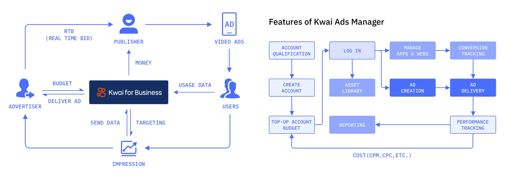
Designing an AI System for Dynamic Ads
Current UX methods (the double diamond) work well for traditional systems with only a few interaction outcomes, but are less effective for UX–AI systems where ad performance evolves over time. It is hard to explain to users how AI combines ad creative assets, and difficult to know how user behavior changes over time with programmatic inputs.
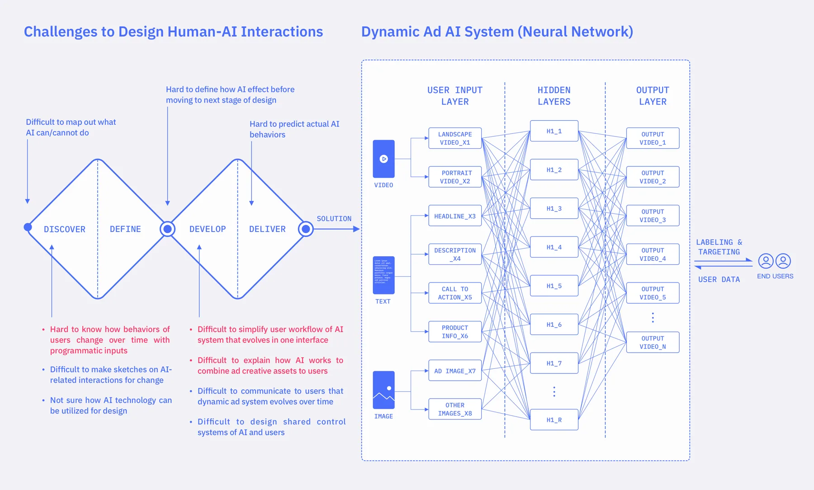
Understanding Users
To better understand the challenges, desires, needs and goals of Kwai for Business agents and advertisers overseas, the team sent out online surveys and conducted in-depth user interviews.
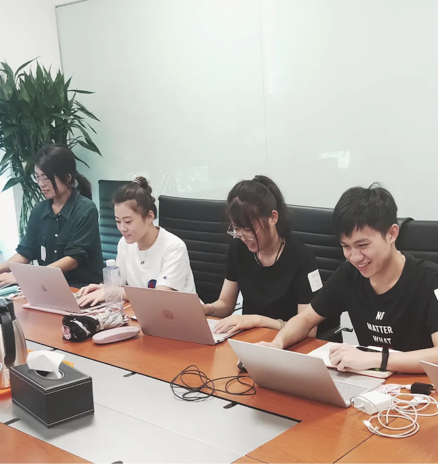
These findings informed the personas and user journeys that guided the development process and shaped decisions for future interactions. The core experiences include completing ad creation and viewing data reports.
A total of 1,306 online surveys (both multiple-choice and open-ended) were collected to uncover which core activities agents are regularly involved in, and what problems they usually have before and after ad delivery. Interviews were conducted with eight of our major agencies and advertisers. Sample questions:
- Walk us through a typical working day. When and how often do you use the platform?
- Have you encountered any difficulties or challenges with the DSP? Please tell us the details.
- Which functions or experiences matter to you the most? How did you solve them?
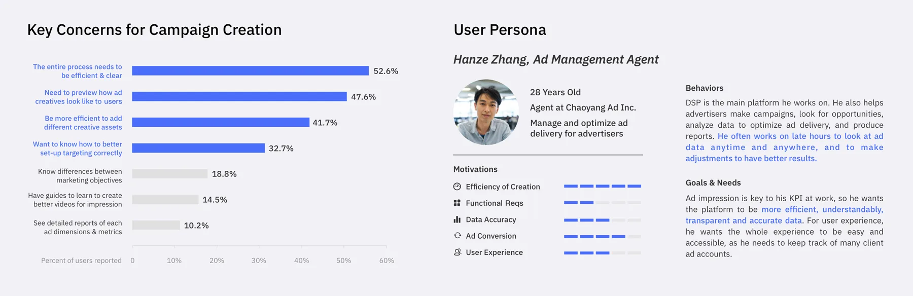
User Journey Map
We focused on the core experience of ad creation and designed the journey map based on critical insights from the personas and needs. The user workflow later translated into the interaction and interface design of the ads manager.
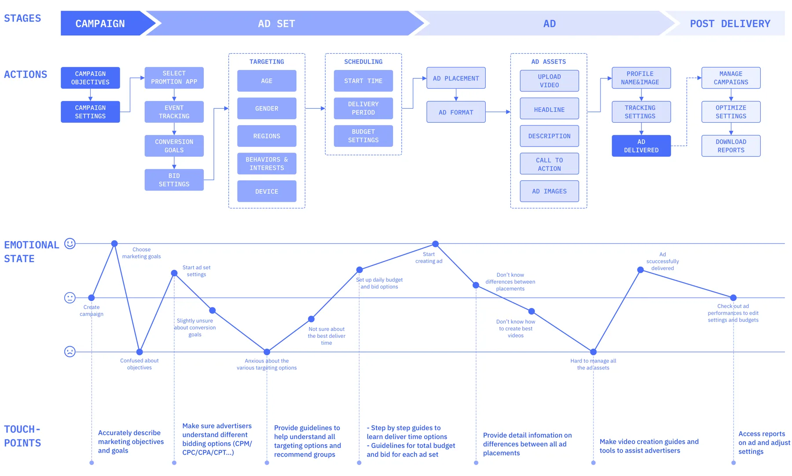
Ideation
After understanding the interaction system and its opportunities, the team quickly moved to sketching wireframes. The problems we explored include:
- How do we let users preview combinations of dynamic assets?
- How do we make the campaign → ad set → ad creation process more efficient?
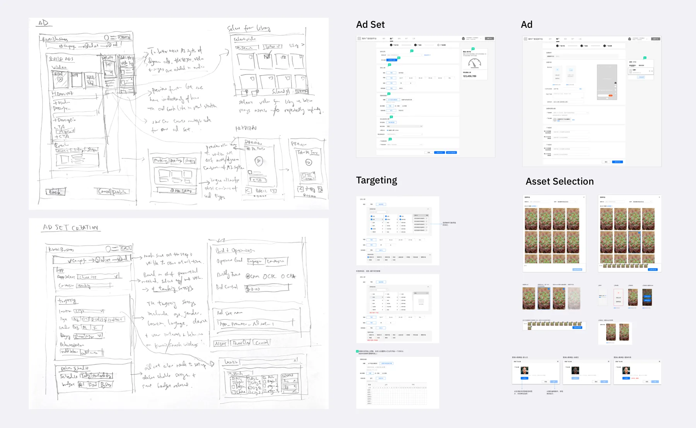
Solution
Building on ideation, we finalized the interaction details of the ad creation process. The task flow includes: (1) ad set: select the promoted app, targeting, schedule and budget; (2) ad: upload a video or choose from the library, add multiple ad texts and image assets, and set up profile information and tracking.
Create Ad Set
Modular entries for audience targeting and bid settings.
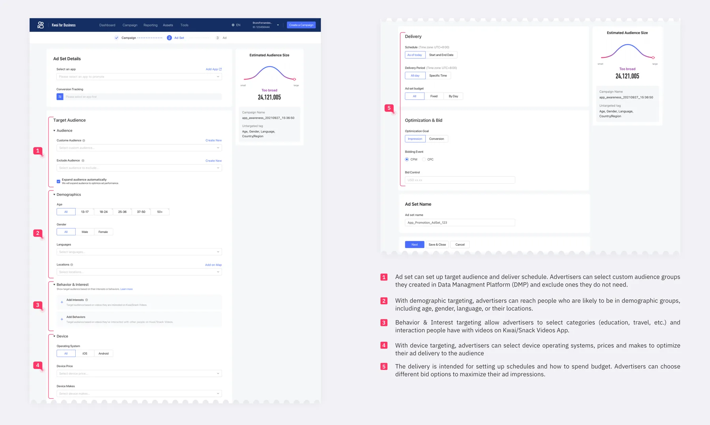
Create Ad
Simplifying human–AI interaction for ad creation.
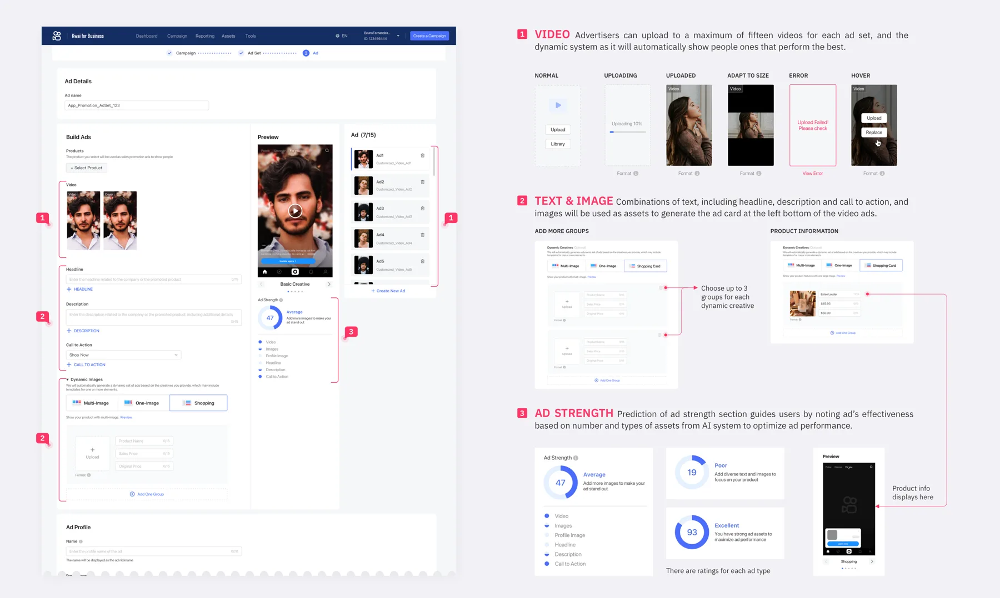
Kwai Video Ad
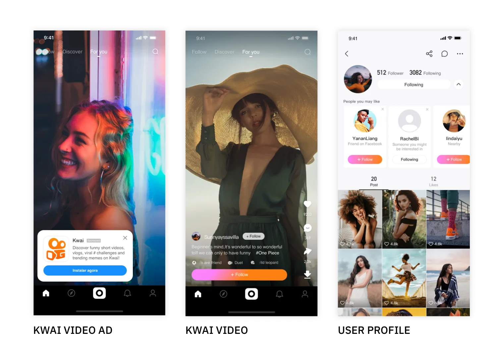
Ad Examples of Creative Combinations
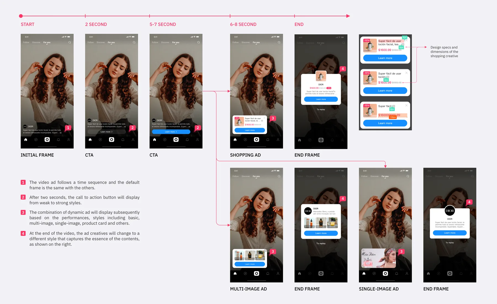
Result
Of 752 surveys collected, 70% of users were satisfied with the product experience. The main metrics (efficient task flow, guidance for the AI system, adaptive performance and feedback) all exceeded 60%. Broken down by workflow, operations and tools, the experience index of different industries follows roughly the same pattern: finance was the most satisfied, while others, including games and online services, had lower scores to address in the next steps.
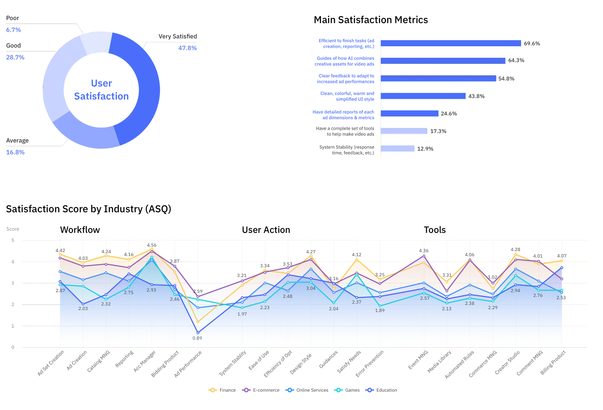